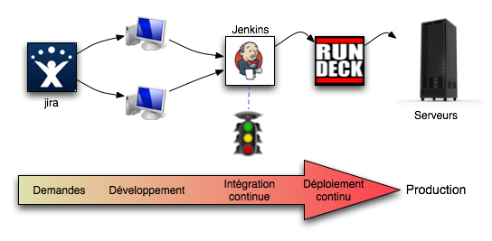

Intégration continue
L'intégration continue est une pratique agile qui vise à intégrer régulièrement tout le travail d'une équipe.
La fréquence d'intégration est variable, allant d'une fois par jour à de multiples fois par jour.
Le but est de détecter l'apparition d'anomalies le plus tôt possible.
La définiton d'intégration couvre généralement la récupération du code source, l'exécution des tests et le build du livrable.
If it hurts, do it more often (Kent Beck)
http://martinfowler.com/articles/continuousIntegration.html
L'intégration continue est un pratique qui vise à tester le bon déroulement des builds aussi souvent que possible : potentiellement après chaque commit.
Cela permet :
En plus du build, ce processus automatisé est aussi l'occassion de générer des rapports sur le code afin d'en améliorer la qualité.
L'outils open source de référence est jenkins
Des plugins ou outils complémentaires comment pmd ou sonar permettent d'obtenir des métriques sur le code.
Les bénéfices de l'intégration continue sont multiples :
La suite de tests qui accompagne le code source est exécuté à chaque build et une erreur est immédiatement remontée (mail, lava lamp, feu tricolore...) en cas d'échec.
http://martinfowler.com/articles/continuousIntegration.html
Voici les pratiques associées à l'intégration continue:
http://fr.wikipedia.org/wiki/Intégration_continue
Jenkins est la solution open source avec un large support et une communauté très dynamique.
2 serveurs d'intégration continue de la fondation apache.
Le serveur d'intégration d'Atlassian (jira, confluence...). Très complet mais payant.
Plus de logiciels sur la page de wikipedia (continuous integration)
Le déploiement continu est une extension de l'intégration continue : en plus d'intégrer régulièrement, on déploit en production régulièrement.
Voici la chaîne en place chez RTL net :
